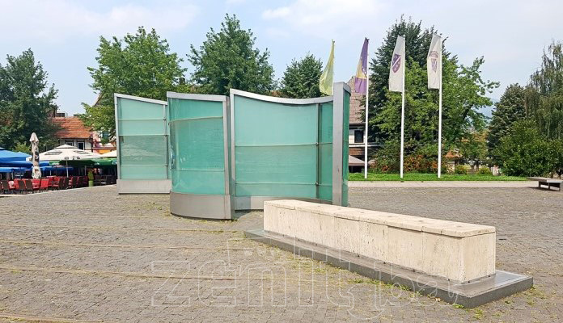
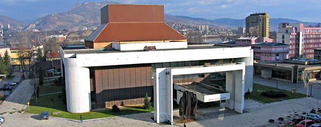
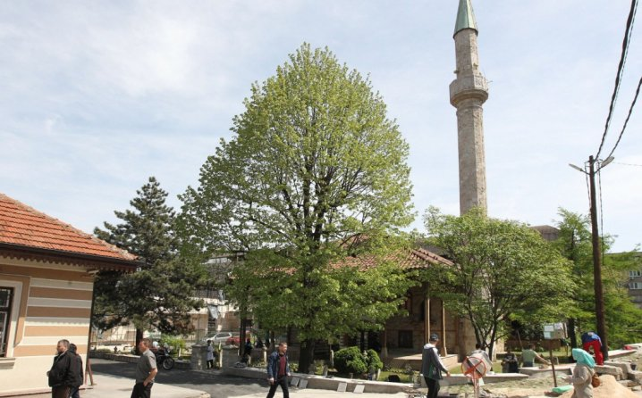

City center attractions
Kameni spavac

The Stone Sleeper is a monumental complex in the center of Zenica, on a plateau of 2,200 m2 in memory of the
fallen fighters in the defense of Bosnia and Herzegovina during the 1992-1995 war. g.
It was built in 2009, with stone horizontal surfaces and glass vertical. The names of 924 killed fighters
from the area of Zenica and fighters killed in Zenica brigades from other cities of BiH are written on the
glass surfaces.
Bosnian peoples theater

The Bosnian National Theater in Zenica was founded in the early 1950s. The theater's repertoire has been compiled
with the aim of being modern and engaging. Works by the world's most important playwrights, as well as numerous
Bosnian and South Slavic authors, were staged. During its history, BNP Zenica has built a recognizable style and
occupied a significant place in the family of Bosnian theaters. Presenting top theatrical achievements, BNP Zenica
participated and was a laureate in numerous theater festivals, festivals and meetings in the former Yugoslavia -
The theater has performed in Montenegro, the Czech Republic, Croatia, Italy, Kazakhstan, Macedonia, Germany, Poland,
Slovenia, Serbia and Vojvodina. The theater has received numerous awards and social recognitions.
Sultan Ahmeds mosque

The Sultan Ahmed Mosque is located in the center of Zenica, Bosnia and Herzegovina. It has been declared a national
monument of Bosnia and Herzegovina.Above the entrance portal there is a tarih in which the year and the restorer of the mosque are mentioned - Abdullah Aziz Khan, the great-grandson of Sultan Ahmed III (1703-1730) who, according to the same tarih, erected this building.
From a document in Turkish from 1849/1850. year, the repair of this mosque was carried out during the reign of
Sultan Abdul Majid. The mosque was rebuilt in 1872, after the great flood that occurred in Zenica in 1869.
The next major restoration followed in 1914 and after that in 1986/1987. year, when the electrical installations
were changed, the roof and ceiling were reconstructed. In 1996, the Islamic Religious Community, in cooperation
with the Turkish Battalion, carried out the last renovation of the mosque.